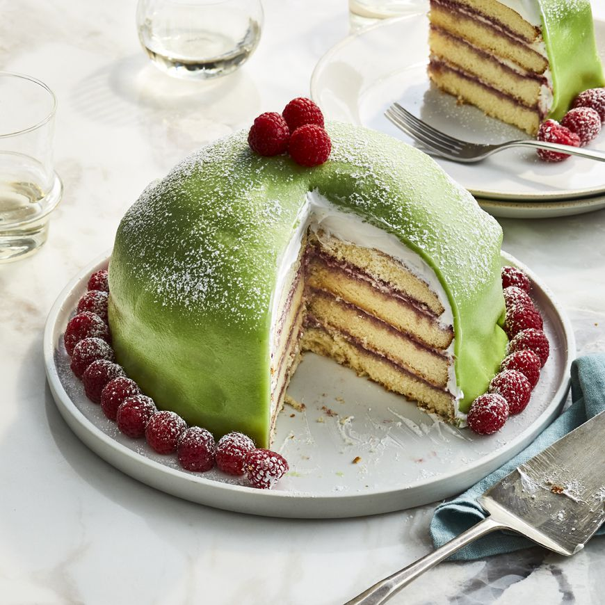

Princess Cake
Home

Description
Princess Cake, lauded as Sweden’s most iconic dessert, was created in the 1920s, by cookbook author
and home economics expert Jenny Åkerström.
While she served as an instructor to the three Princesses of Sweden
Ingredients
- Sponge cake
- Vanilla custard(pastry cream)
- Raspberyy jam
- Whipped cream
- Marzipan topping
Steps
- Prepare the pastry cream: Complete this step
first since you need to chill the cream for at least 3 hours.
- Bake the cake: Bake the cakes and cool thoroughly and slice into four thin layers
- Assemble the cake: Spread the layers with
raspberry jam and pastry cream and assemble them on a cake plate.
- Finish your masterpiece: Prepare your whipped cream and marzipan and top your cake.
Finally, dust the cake with powdered sugar and decorate it with fresh raspberries.